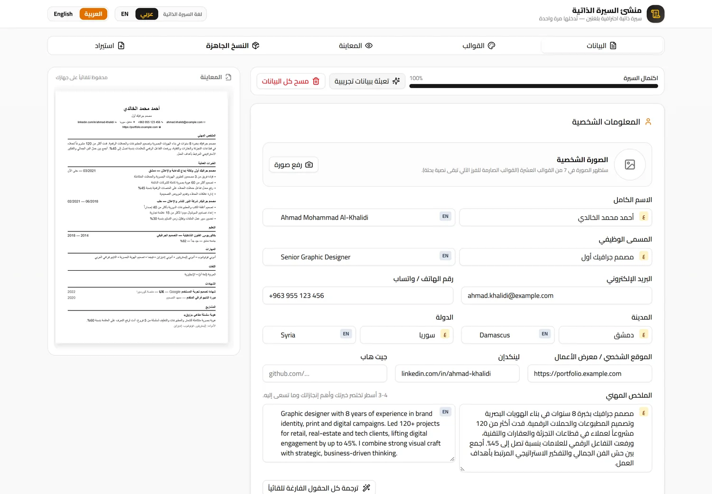
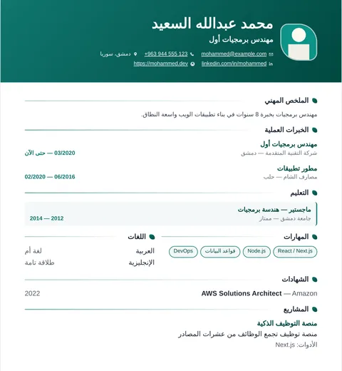
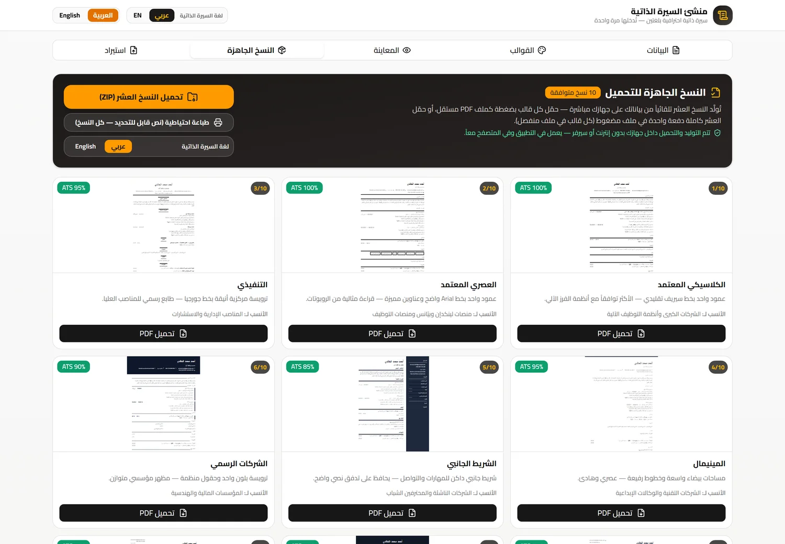

سيرة واحدة…
عشرة قوالب تقبلها أنظمة التوظيف
أدخل بياناتك مرة واحدة بالعربي والإنجليزي، واحصل على عشرة ملفات PDF بتصاميم مختلفة — كل قالب بنسبة توافق ATS واضحة. يعمل بدون إنترنت، وبياناتك لا تغادر جهازك.


من الصفر إلى سيرة جاهزة للإرسال
لا تحتاج إلى تصميم ولا إلى برامج مكتبية — فقط بياناتك.
أدخل بياناتك مرة واحدة
عربي وإنجليزي جنباً إلى جنب، مع رفع صورتك الشخصية وتعديل أي حقل في أي وقت.
لديك سيرة قديمة؟ استوردها PDF أو DOCX ليُستخرج منها البيانات تلقائياً.اختر قالبك
عشرة تصاميم مختلفة تماماً، ولكل قالب نسبة توافق مع أنظمة الفرز الآلي ووصف لمن يناسبه.
المعاينة تتحدّث فوراً مع كل تعديل تكتبه.حمّل PDF مباشرة
اضغط «تحميل PDF» فيُحفظ الملف فوراً في مجلد التنزيلات — بدون نافذة طباعة وبدون إنترنت.
أو حمّل العشرة كلها في ملف ZIP واحد، كل قالب في ملف منفصل.عشرة قوالب مبنية على المعايير العالمية المعتمدة
ليست اختلافات شكلية — كل قالب يجسّد معيارًا حقيقيًا تعتمده الشركات ومنصات التوظيف (هارفارد، ATS/Workday، Indeed، Europass، قوالب Google، Zety وغيرها). اضغط أي قالب لعرض الصفحة كاملة.
كل القوالب تدعم العربية والإنجليزية، وتُصدَّر PDF عالي الجودة مع روابط قابلة للنقر، وصفحة هبوط موثقة في TEMPLATE-RESEARCH.md داخل المستودع.
سيرتك قد تُرفض قبل أن يراها إنسان
نسبة كبيرة من الشركات تستخدم نظام تتبع متقدمين (ATS) يقرأ ملفك ويستخرج منه البيانات قبل أن يصل إلى موظف التوظيف.
نص حقيقي، لا صور
كل حرف في ملف PDF مولد كنص قابل للقراءة والبحث، وليس صورة مسطّحة يجهلها النظام.
ترتيب منطقي للأقسام
العناوين والمسميات الوظيفية والتواريخ في مواضع يفهمها النظام، دون جداول معقدة أو أعمدة متشابكة.
نسبة توافق معلنة
كل قالب يعرض نسبة توافقه (85% إلى 100%) مع وصف لمن يناسبه، فتختار بوعي لا بالتخمين.
كل ما تحتاجه، بلا تعقيد
PDF مباشر بدون نوافذ
تُولَّد النسخة داخل التطبيق وتُحفظ في مجلد «التنزيلات» بجودة طباعة عالية — بدون إنترنت وبدون نافذة طباعة.
عشرة قوالب… أو ZIP واحد
حمّل أي قالب منفرداً بضغطة، أو نزّل العشرة كلها في ملف مضغوط، كل قالب في ملف PDF مستقل باسم واضح.
استيراد سيرتك الحالية
ارفع سيرتك بصيغة PDF أو DOCX ليستخرج التطبيق بياناتك تلقائياً بدل كتابتها من جديد.
صورتك الشخصية
من الكاميرا أو المعرض، مع خيار إظهار/إخفاء الصورة. القوالب الصارمة للفرز الآلي تبقى نصية بحتة.
عربي وإنجليزي معاً
حقلان لكل معلومة: عربي وإنجليزي. املأ أحدهما واترك التطبيق يترجم الباقي، أو اكتب كل شيء يدوياً.
خصوصية كاملة
لا حسابات ولا خوادم. بياناتك وصورتك تبقى داخل جهازك، والتطبيق لا يطلب أي أذونات حساسة.

عشرة ملفات… أو ملف واحد يحويها
بدل أن ترسل سيرة واحدة وتتمنى أن تُقبل، أرسل النسخة المناسبة لكل وظيفة. التطبيق يولّد القوالب العشرة دفعة واحدة من نفس البيانات.
- تحميل الكل (ZIP): عشرة ملفات PDF مستقلة بأسماء واضحة داخل ملف مضغوط واحد.
- تحميل منفرد: زر «تحميل PDF» لكل قالب، مع نسبة توافق ATS ظاهرة أمامه.
- نسخة نصية احتياطية: طباعة نصية كاملة لمن يحتاج نصاً قابلاً للتحديد بالكامل.
ثبّت التطبيق في دقيقة
التطبيق موزّع خارج متجر Google Play وموقّع رقمياً — لذلك يظهر تنبيه واحد طبيعي عند التثبيت.
- حمّل الملف من زر التحميل — حجمه 1.5 ميجا فقط.
- افتح الملف من شريط الإشعارات أو من مجلد التنزيلات.
- إذا طلب النظام إذن «التثبيت من مصادر غير معروفة»، اضغط «السماح» لهذا التطبيق أو المتصفح فقط.
- اضغط «تثبيت» ثم افتح «استوديو السيرة الذاتية» من قائمة التطبيقات.
- داخل التطبيق: أدخل بياناتك ← تبويب «النسخ الجاهزة» ← حمّل أي قالب أو الكل.
بيانات الإصدار
d495af9e5d8e2771a688682347999503b6f06c519a7dd6bfcf7c625220593356
7edc173b91043dccbb011fc112e73431571e4e35255c67a39d99ec684cd2f33f
SHA-256. تحقّق من البصمة بعد التنزيل عبر sha256sum للتأكد أن الملف لم يُعدَّل.
ما الجديد
الإصدار 1.3.0 الأحدث
- إعادة بناء القوالب العشرة على معايير عالمية موثّقة: هارفارد الرسمي (Harvard FAS/HBS)، متوافق الفرز الآلي (تقرير Jobscan لشركات Fortune 500)، إنديد الرسمي، جوجل البسيط، يوروباس المعتمد (الاتحاد الأوروبي)، التنفيذي (HBS)، الشريط الحديث (Zety/Novoresume)، المسار المهني، الخريج الجديد، والإبداعي — كل قالب بترتيب أقسام وبنية المعيار الأصلي، وليس مجرد تغيير شكل.
- قالب جديد للخريجين: التعليم أولاً ثم التدريبات ثم المشاريع والمهارات المجمّعة — كما توصي أبحاث التوظيف لأصحاب الخبرة القليلة.
- يوروباس الرسمي: ترويسة شبكية، أشرطة عناوين كحلية، وجدول لغات بمرجعية CEFR — المعيار الأوروبي المعتمد للمنح والوظائف الدولية.
- اختبار عميق بأدلة: 152 تحققاً آلياً — PDF لكل قالب بالعربية والإنجليزية مع روابط قابلة للنقر وحروف عربية متصلة — والأدلة محفوظة في المستودع.
ما الجديد في الإصدار 1.2.2
- الروابط قابلة للنقر داخل PDF: البريد والهاتف ولينكدإن و GitHub والموقع الشخصي وروابط المشاريع والشهادات — كلها تُفتح بنقرة واحدة من الملف المُحمَّل، ويصبح النص المكتوب كرابط داخل الأوصاف رابطاً أيضاً.
- إصلاح الحروف العربية المنفصلة في PDF: كانت العناوين والاسم يظهران بحروف منفصلة في بعض القوالب — أصبحت مترابطة بشكل صحيح في القوالب العشرة كلها.
- إصلاح استيراد السيرة من ملف أو نص: التعرف الآن على التواريخ بصيغة «2018/03 - حتى الآن» و«من 2018 إلى 2020»، وفصل الدرجة عن الجامعة، ولن تضيع الخبرات بعد الآن. الملفات الممسوحة ضوئياً (صور بلا نص) تظهر رسالة واضحة بدل الصمت.
- استيراد DOCX و TXT مُختبَر فعلياً: اختبارات آلية تُثبت الاستيراد من ملف Word ونص ملصوق وتطبيقه على القوالب العشرة.
ما تم إصلاحه في الإصدار 1.2.1
- الصورة الشخصية في القوالب الحديثة السبعة — مع خيار إظهار/إخفاء (القوالب الصارمة للفرز الآلي تبقى نصية وفق معاييرها).
- حماية من فقدان البيانات: أي بيانات محفوظة من إصدارات سابقة تُستعاد تلقائياً.
- نسخة ويب كاملة بدون تثبيت + إصلاح الاستيراد على الويب.
ما تم إصلاحه في الإصدار 1.1.0
- تحميل PDF مباشر: يُحفظ الملف فوراً في التنزيلات بدل فتح نافذة طباعة.
- ZIP بكل قالب منفصل: ملف «تحميل الكل» يحتوي 10 ملفات PDF مستقلة بأسماء واضحة.
- رفع الصورة الشخصية: من الكاميرا أو المعرض مباشرة في تبويب «البيانات».
- الطباعة النصية الاحتياطية ما زالت متاحة لمن يريد نسخة نصية قابلة للتحديد بالكامل.
أسئلة يطرحها الجميع
هل التطبيق مجاني بالكامل؟
نعم. التطبيق والنسخة الويب مجانيان، بدون حساب ولا اشتراك ولا علامة مائية على ملفات PDF.
هل بياناتي تُرفع إلى خادم؟
لا يوجد خادم أصلاً. كل البيانات والصور تُخزَّن داخل جهازك، وتوليد ملفات PDF يتم محلياً بالكامل. لا تسجيل ولا تتبّع.
ما معنى توافق ATS ولماذا يهم؟
ATS هو نظام تتبع المتقدمين الذي تستخدمه الشركات لفرز السير الذاتية آلياً. القوالب المبنية بعمود واحد ونص حقيقي تُقرأ بدقة، بينما الجداول والصور والرموز تُفسَّر خطأً أو تُهمَل تماماً. لهذا تعرض كل قالب نسبة توافقه.
هل يعمل بدون إنترنت؟
نعم، بعد التثبيت يعمل التطبيق بالكامل أوفلاين — بما في ذلك توليد ملفات PDF وحفظها في مجلد التنزيلات.
لماذا يظهر تنبيه «تطبيق غير موثوق»؟
لأن التطبيق موزّع خارج متجر Google Play وموقّع ذاتياً. هذا طبيعي: اضغط «تفاصيل» ثم «تثبيت على أي حال». بصمة التوقيع وبصمة الملف منشورتان في صفحة التحميل لتتحقق بنفسك.
هل أحتاج إلى تثبيت التطبيق لاستخدامه؟
لا. النسخة الويب تعمل من المتصفح على الكمبيوتر والجوال بنفس الميزات، ويمكن تثبيتها كتطبيق PWA من قائمة المتصفح.
سيرتك القادمة تبدأ من هنا
بياناتك مرة واحدة… وثلاث دقائق تفصلك عن عشر نسخ جاهزة للإرسال.